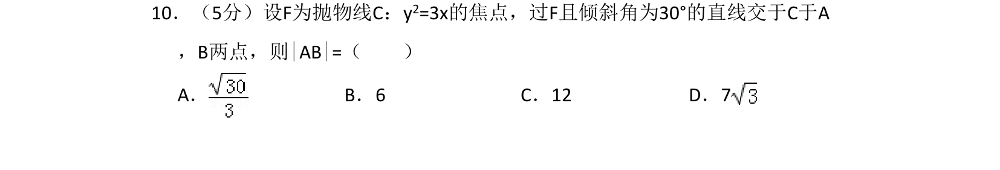
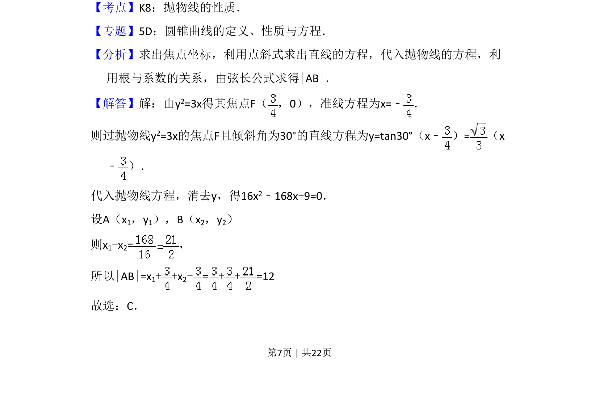
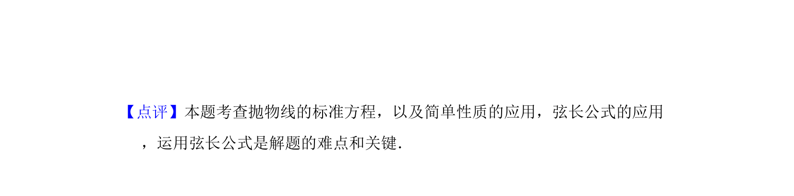

考点：抛物线性质 焦点弦 弦长 韦达定理

本题考查抛物线焦点弦长度的计算，通过焦点和倾斜角求直线方程，联立抛物线利用弦长公式求解。


📄 原 PDF 第 7 页：
素材/真题/吉林/2008-2024·（吉林）数学高考真题/2014年高考数学试卷（文）（新课标Ⅱ）（解析卷）.pdf
10．（5分）设F为抛物线C：y2=3x的焦点，过F且倾斜角为30°的直线交于C于A ，B两点，则|AB|=（ ） A．B．6 C．12 D．7
【考点】K8：抛物线的性质．菁优网版权所有 【专题】5D：圆锥曲线的定义、性质与方程． 【分析】求出焦点坐标，利用点斜式求出直线的方程，代入抛物线的方程，利 用根与系数的关系，由弦长公式求得|AB|． 【解答】解：由y2=3x得其焦点F（ ，0），准线方程为x=﹣ ． 则过抛物线y2=3x的焦点F且倾斜角为30°的直线方程为y=tan30°（x﹣ ）=（x ﹣ ）． 代入抛物线方程，消去y，得16x2﹣168x+9=0． 设A（x1，y1），B（x2，y2） 则x1+x2=， 所以|AB|=x1+ +x 2+=+ +=12 故选：C．